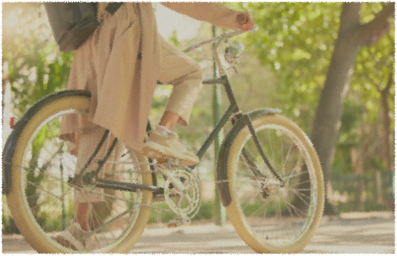
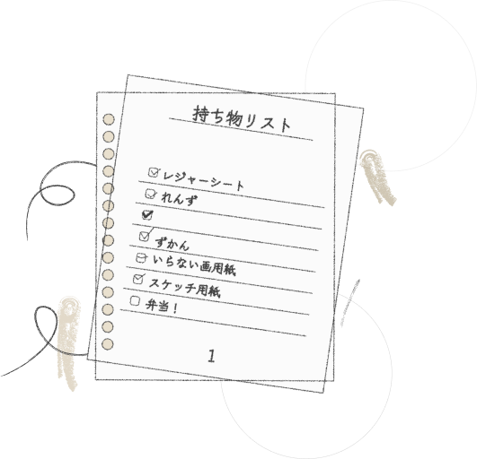

・準備はしっかりと！
忘れ物があると、せっかくの冒険も台無しに。
持ち物リストを作って、出発前にもう一度チェック！

安全第一！
自転車は楽しいけど、ちょっとした油断が事故につながることも。
交通ルールを守って、ブレーキ・タイヤ・ライトなどの点検も忘れずに。

よく見てみよう！
何気ない風景の中にも、ふとした発見が隠れているかも。
立ち止まって、じっくり観察してみると、世界が少し変わって見えるかも!